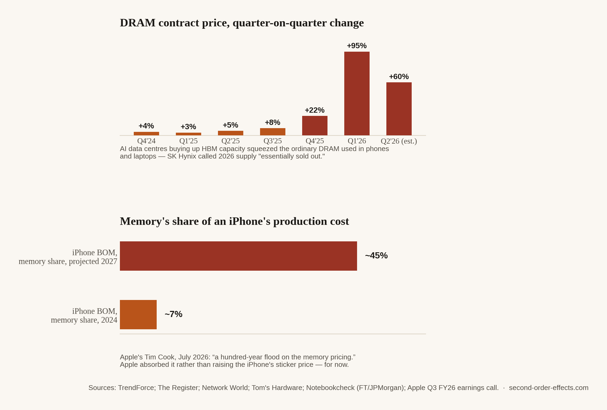

Why an AI Data Centre Made My Phone More Expensive
DRAM contract prices nearly doubled in a single quarter in early 2026. The reason has almost nothing to do with phones, and almost everything to do with the chips inside the data centres training the next generation of AI models.
Somewhere in a data centre I will never see, a memory chip is being installed into a server whose entire job is feeding data to a GPU fast enough that the GPU never sits idle. That chip is called HBM, high-bandwidth memory, and it is, in a very literal sense, the reason ordinary memory got expensive this year. I didn't expect a supply chain story about AI training clusters to be the one that explained why my own phone upgrade suddenly looked like worse value than it did eighteen months ago, but that is exactly the chain.
The chip that isn't the story, and the chip that is
Everyone who follows AI even loosely knows about the GPU shortage, Nvidia's chips being the scarce, headline-grabbing resource that every hyperscaler wants more of. What gets far less attention is that each of those GPUs needs to be paired with large amounts of HBM to actually function at the speed AI training requires, and HBM is manufactured on the same production lines, by the same three companies, Samsung, SK Hynix, and Micron, that also make the ordinary DRAM that goes into your phone, laptop, and PC. HBM production consumes roughly three times the wafer capacity per gigabyte that conventional DRAM does. Every wafer a memory maker redirects toward HBM for a data centre is a wafer that isn't making the DRAM your next phone needs.
The effect on price has been sharper than almost anything else covered on this site. DRAM contract prices rose roughly 90 to 95% quarter-on-quarter in early 2026, on top of an already-elevated 2025, with total memory industry revenue hitting $97 billion in the first quarter of 2026 alone, up 81% from the previous quarter. SK Hynix has described its 2026 HBM, DRAM, and NAND capacity as essentially sold out. Micron went further and exited the consumer memory market entirely, choosing to prioritise its enterprise and AI customers over the phone and laptop makers it used to serve directly. A Samsung executive put it plainly: "In 2026, there's going to be issues around semiconductor supplies, and it's going to affect everyone, not just Samsung."

Where it lands: the phone in your pocket
Apple felt this earlier and more directly than most consumer brands, because it buys memory at a scale few companies can match. On its July 2026 earnings call, Tim Cook described the situation as "a hundred-year flood on the memory pricing." Apple's inventory jumped 87% year-on-year, to $11.09 billion, as the company stockpiled chips ahead of further price rises, and memory costs alone drove more than the entire 120-basis- point decline in Apple's gross margin between the March and June quarters. The company guided its September quarter margin down again, citing the same cause. Reporting drawing on FT and JPMorgan analysis suggests memory's share of an iPhone's production cost could rise from around 7% in 2024 to as much as 45% by 2027, an extraordinary jump for a single component category on a device that hasn't visibly changed at all.
For now, Apple has largely chosen to absorb the cost rather than raise the iPhone's sticker price, leaning on supplier leverage and its services revenue instead, though it has already raised prices on the iPad, Mac, Apple TV, Vision Pro, and HomePod. Dell and Lenovo took the more direct route: Dell raised PC prices 15 to 20% in December 2025, with its COO saying he had "never seen memory-chip costs rise this fast," and Lenovo followed with its own increases from January 2026. Analysts at IDC now expect average PC prices to rise as much as 8% across 2026 for this reason alone.
Nobody at Apple, Dell, or Lenovo decided to make their products more expensive. A data centre buying memory for a completely different purpose simply got there first, and left less for everyone building something you can hold in your hand.
Why I keep returning to this one
Reading through NTU's Business Analytics and Computer Science program, and later building a fintech backend for my final-year project, I spent a fair amount of time thinking about hardware constraints as an abstract engineering problem: latency, throughput, cost per compute unit. This is the first time I've watched one of those constraints walk directly into a consumer price tag I personally pay. It's a genuinely strange thing to hold two ideas at once: that the AI boom is one of the more remarkable technological shifts I expect to watch in my lifetime, and that the same boom is the specific reason my next phone will cost more than this one did, for a component I will never see or think about again once the device is in my pocket. That gap, between the scale of the cause and the smallness of where it eventually lands, is most of why this site exists in the first place.
Sources
- TrendForce — memory industry revenue and DRAM price data, Q1 2026
- The Register — DRAM prices expected to double, February 2026
- Network World — Samsung warns of memory shortages driving industry-wide price surge
- Tom's Hardware — Apple's inventory and gross margin, Q3 FY2026 earnings call
- Notebookcheck — iPhone DRAM crisis and projected memory cost share (via FT/JPMorgan)
- PCWorld — PC prices could rise 8% in 2026 due to memory shortages
- Chart data compiled from TrendForce quarterly memory market reports, 2024–2026, and Notebookcheck's summary of FT/JPMorgan iPhone bill-of-materials analysis.
Comments